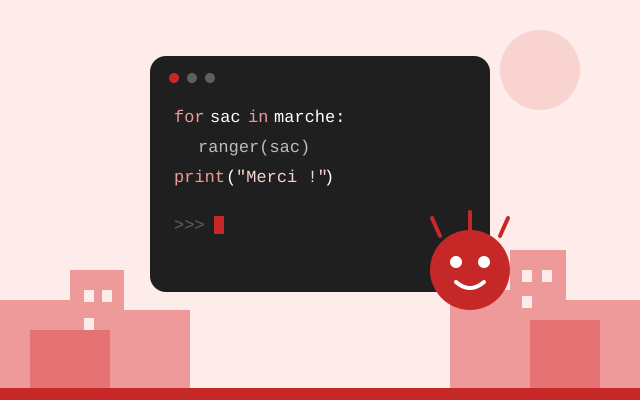
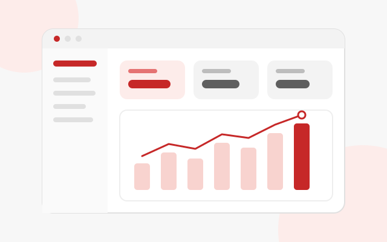
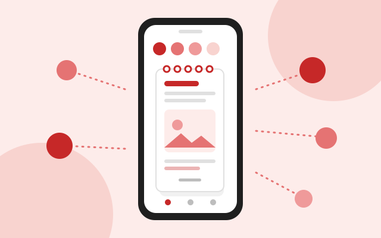

SMPortfolio
Chef de projet digital &orchestrateur d'IA
Je conçois des produits numériques pour la RDC et j'orchestre une équipe d'IA pour les construire.



Réseau social
Sangona
samuel-mukadi.github.io